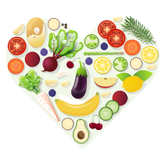

لمحة عامة عن الدرس
لقد نجحت في الوصول إلى الدرس النهائي – تهانينا! لقد حان الوقت لتتعلم كيفية الحفاظ على المهارات الجديدة التي تعلمتها للحياة!
سيشرح لك درس هذا الأسبوع ما يلي:
الحفاظ على الوزن
قد يتطلب الأمر أكثر من مجرد الدافعكيفية التعامل مع الزلات
إنه من الأهمية بمكان ألا تدع شعورك بالزلل يؤثر سلبيًا على تقدمكالحيلولة دون الانتكاس.
إن التعلم من كل خطأ نرتكبه يمنع من تحول الزلات إلى عادات